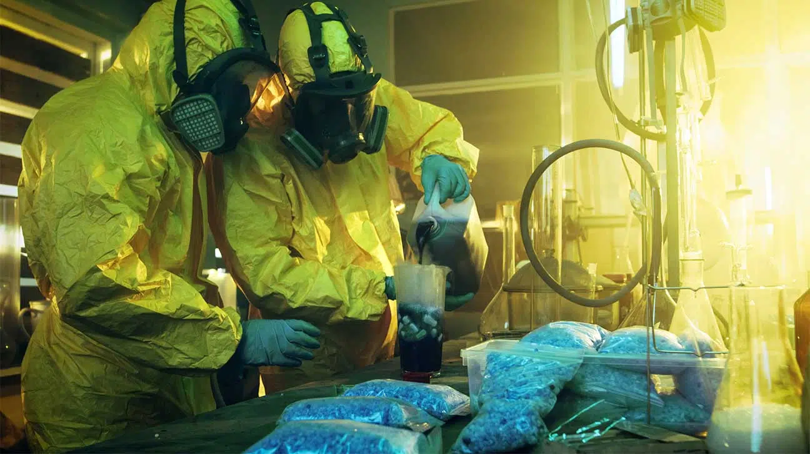

Totally not suspicous blue candy

Description
Racemic methamphetamine may be prepared starting from phenylacetone by either the Leuckart or reductive amination methods.
In the Leuckart reaction, one equivalent of phenylacetone is reacted with two equivalents of phenylacetone to produce the phenylacetone of methamphetamine plus carbon dioxide and
methylamine as side products.
In this reaction, an iminium cation is formed as an intermediate which is reduced by the second equivalent of N-methylformamide.
The intermediate formyl amide is then hydrolyzed under acidic aqueous conditions to yield methamphetamine as the final product.
Alternatively, phenylacetone can be reacted with methylamine under reducing conditions to yield methamphetamine.
In order to cook you'll need the following ingridients:
- Chili powder
- Methylamine (very important)
- Blue dye
- Fulminated mercury
- Thermite
After gathering the ingridients (not from the same store), you can start cooking, it's quite simple, just basic chemistry
- Get an RV
- Drive into the desert
- Take off your pants, and your shirt (only wear an apron)
- Methylamine and phenylacetone are reacted to form a not yet complete, methamphetamine